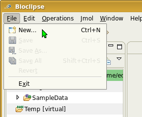
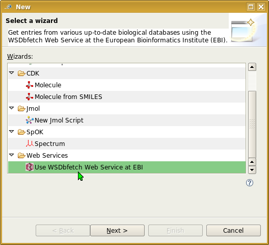
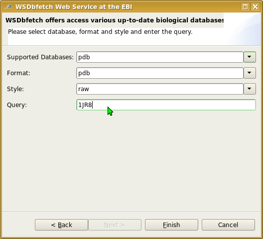
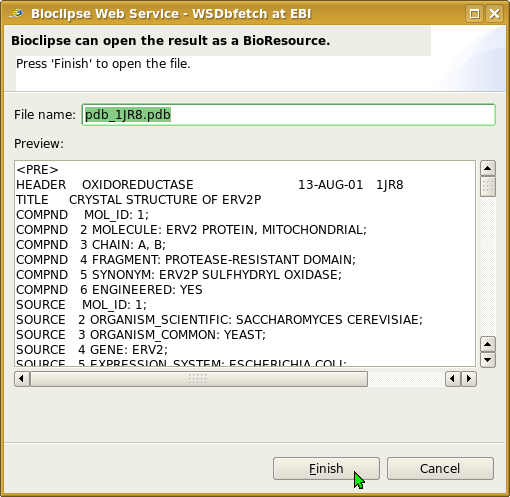

How to retrieve and import a pdb entry from the web.
Please ensure that you are online.
1. Open the "New" wizard
Click the "New" button in the toolbar of bioclipse or select "New" in the "File" menu.

2. Select the WSDbfetch wizard
Choose the "Use WSDbfetch Web Service at EBI". Click "Next" to continue.

3. Configure the query
Choose "pdb" as database, the format and style may stay default. In the query field enter "1JR8"
(this is the name of the pdb file of a FAD-binding fold and intersubunit disulfide shuttle in the thiol oxidase Erv2p in Saccharomyces cerevisiae).
Click "Finish" to continue and wait for the Web Service query to finish, this may need a few seconds as pdb files are quite big.

4. Open the the result
Click "Finish" to save the result as a virtual result. You can then open this in an editor, e. g. the Jmol editor. You need to
copy the file to a non-virtual directory if you want to keep it for another Bioclipse Session.
